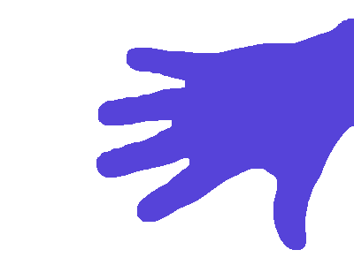
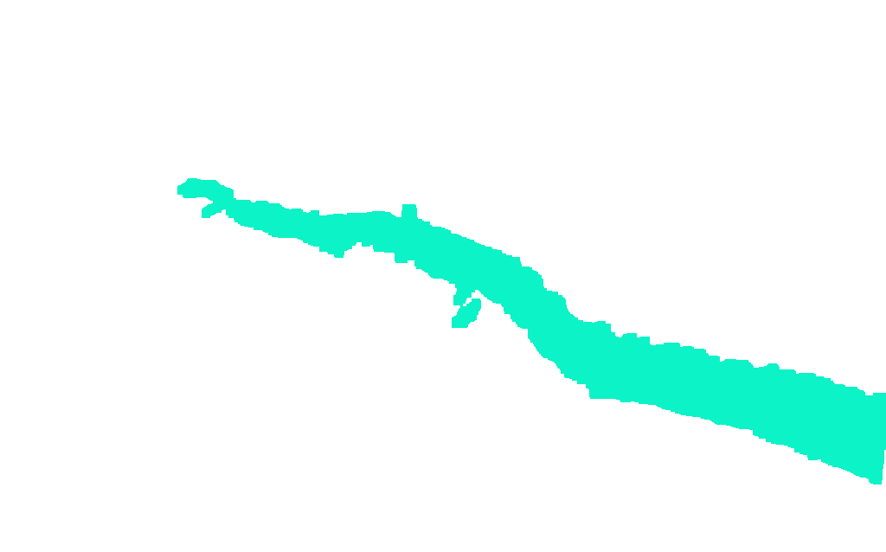

Problem Definition
For Part 1, we are given binary images of hands and a stained tissue sample of a breast cancer tumor. We need to label the connected components, apply boundary following algorithm, compute image moment metrics and apply skeleton finding algorithm.
This is very important in the area of computer vision, because it lays as foundations for more complicated object segmentation problems.
Method and Implementation
Connected Components
Pre-Process Image
The first step is to preprocess the image using a variation of dilation, erosion, opening, closing, gaussian blur and thresholding. Depending on the situation, the operations vary slightly.
We usually use dilation to expand the image of focus; eg. filling a hole or merging lines together
We usually use erosion to do the opposite; break away small parts.
The combination of erosion and dilation, depending on which goes first, is known as 'opening' and 'closing'. Closing helps to remove small blobs and Opening helps to fill in holes.
Blur and Thresholding are additional operations used to remove unwanted pixels.
Flood Fill
The next step is to retrieve the connected components. To achieve this, I modified the usual flood fill algorithm to take in multiple colors as it iteratively traverses the image. The result is an image where different connected components have different colors (randomly generated).
Filter large components
Next, we find the biggest n connected components by counting the colors(eg. the most-occuring color denotes the largest connected component). We assume the largest component is the background (this works for the sample images provided), and thus, we don't take in account of the largest component. We take the 2nd to n-th component as our objects of focus.
Boundary Tracing
We find the boundary of our object of focus by using the boundary tracing algorithm. In short, it finds the first black pixel (start of the boundary), and then circles the black pixel clock-wise to find the next black pixel, which becomes the next pixel of our boundary. Eventually, it continues until we end up with the first black pixel we started with. By then, we already have a chain of black pixels, which is the boundary of our object of focus.
Image Moments
The algorithms used to calculate this is as follows:
Area and Center of Mass

Second Moment
Orientation

Skeleton Finding
An overview of this algorithm is that it continuously erodes the original image. At each iteration, we get the difference from previous and stores it (using bitwise_or). The result is a skeletion path of the image of focus
Results
The results were good, but it's important to keep in mind that it was fine-tuned manually. A new image may not work with the current parameters.
Original
| Open Hand | Open Hand Partial | Open Fist | Tumor |
|---|---|---|---|
 |
 |
 |
 |
Connected Components
| Open Hand | Open Hand Partial | Open Fist | Tumor |
|---|---|---|---|
|  |  |
Boundary Tracing
| Open Hand | Open Hand Partial | Open Fist | Tumor |
|---|---|---|---|
 |
 |
Skeleton Finding
| Open Hand | Open Hand Partial | Open Fist | Tumor |
|---|---|---|---|
 |